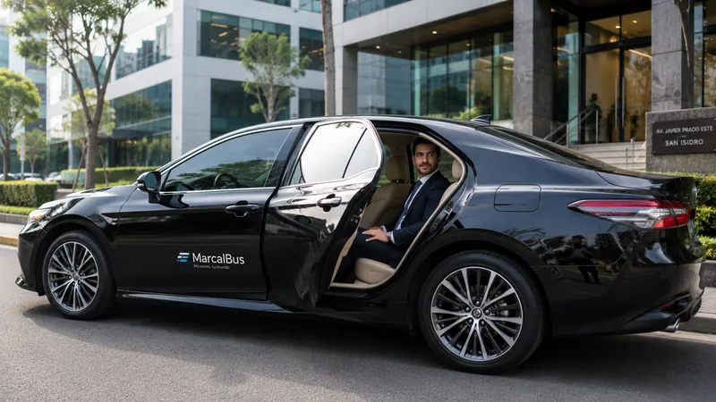

✓
Puntualidad que protege agendas
Planificamos recojo, ruta y ventana de llegada para que el pasajero no tenga que improvisar ni esperar sin información.
Cuando una gerencia, un cliente o una visita importante se mueve por Lima, el viaje también comunica quién es tu empresa. MarcalBus coordina traslados ejecutivos seguros, puntuales y reservados, con tecnología que facilita el control para Recursos Humanos y una experiencia cómoda para cada pasajero.

Coordinar un taxi ejecutivo parece sencillo hasta que se acumulan las variables: una reunión que cambia de hora, un vuelo que se adelanta, un cliente que necesita privacidad, una gerencia que no puede esperar o un colaborador que requiere apoyo para llegar a una sede. Cuando no existe un proveedor confiable, Recursos Humanos termina resolviendo cada traslado por WhatsApp, persiguiendo confirmaciones y respondiendo preguntas que deberían estar cubiertas por la operación.
MarcalBus convierte esa carga dispersa en un servicio ordenado. Recibimos el requerimiento, confirmamos la ruta, asignamos el servicio y dejamos trazabilidad de los datos importantes. El pasajero recibe una experiencia clara y el encargado de brindar el servicio al usuario tiene una referencia operativa para consultar y actuar.
No se trata solo de movilizar a una persona de un punto a otro. Se trata de proteger tiempo, imagen y tranquilidad. Un traslado puntual permite que una reunión empiece a tiempo; un conductor profesional mejora la recepción de un cliente; una comunicación clara evita que RR. HH. tenga que apagar incendios durante el día.
Planificamos recojo, ruta y ventana de llegada para que el pasajero no tenga que improvisar ni esperar sin información.
El traslado de una gerencia o un cliente requiere discreción, comunicación respetuosa y una unidad presentada de forma adecuada.
El encargado recibe confirmaciones y un canal operativo claro, evitando perseguir al conductor o reconstruir el estado del servicio.
Atendemos aeropuertos, sedes, hoteles, reuniones, cenas, eventos y traslados puntuales con una coordinación adaptada.
Ordenamos la información del servicio para que Administración pueda revisar consumos y gestionar la relación con un proveedor B2B.
Si también necesitas transporte de personal o minibuses, centralizamos la coordinación.
El GPS aporta visibilidad sobre la unidad y la ruta. Los registros de servicio ayudan a confirmar horarios y analizar incidencias. Las herramientas de IA pueden apoyar la planificación de tiempos, detectar patrones de demanda y ordenar información para que el equipo operativo tome decisiones más rápidas.
La tecnología no reemplaza la atención humana. La usamos para que el responsable tenga menos tareas repetitivas y más capacidad de anticipación. Cuando un cliente solicita varios traslados, el sistema de coordinación permite ordenar fechas, pasajeros, puntos y observaciones. Cuando una ruta cambia, el equipo puede revisar el impacto antes de confirmar.
Para el pasajero, esto se traduce en mensajes más claros y menos incertidumbre. Para RR. HH., en una operación que se puede consultar y mejorar. Para la empresa, en una experiencia más consistente para clientes, ejecutivos y colaboradores.
Cotizar taxi ejecutivo
RR. HH. suele ser el punto de contacto cuando una persona necesita movilidad para una reunión, una visita, una capacitación o una actividad especial. La expectativa es alta: que el servicio sea simple para quien viaja y administrable para quien lo coordina. Si algo sale mal, la percepción recae sobre la empresa, aunque el problema haya empezado con un proveedor externo.
Por eso construimos el servicio alrededor de las preguntas que importan: ¿quién viaja?, ¿a qué hora debe llegar?, ¿qué información necesita?, ¿quién confirma el servicio?, ¿qué ocurre si cambia el horario? Responderlas antes del traslado reduce ansiedad, evita mensajes duplicados y permite que el encargado atienda al usuario con seguridad.
La experiencia se vuelve especialmente valiosa cuando se trata de una visita externa. Un cliente que recibe indicaciones claras, viaja cómodo y llega puntual percibe orden desde el primer contacto. Esa impresión acompaña a la reunión y forma parte de la imagen corporativa.
Reserva, coordinación de recojo, conductor profesional, unidad cómoda, seguimiento GPS y atención para el responsable corporativo.
Sí. Coordinamos traslados para clientes, gerencias, visitas y delegaciones, cuidando la comunicación y la privacidad.
Sí, podemos coordinar traslados corporativos al aeropuerto según hora, ruta y requerimientos del pasajero.
Definimos confirmaciones, seguimiento y un canal operativo según la cantidad y complejidad de los traslados.
Sí. La operación se coordina 24/7 según el alcance contratado.
Apoya la planificación, organización de solicitudes y análisis de patrones; la atención y decisión final siguen a cargo del equipo.
Sí. También puedes contratar transporte de personal, minibuses corporativos y turismo empresarial.
Escribe por WhatsApp o completa el formulario indicando fechas, horarios, rutas y pasajeros.
Cuéntanos qué tipo de pasajeros, rutas y horarios necesitas cubrir.
Hablar por WhatsApp